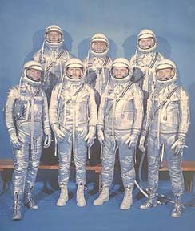

The Mercury Program 1958 - 1961
Project Mercury, as it was called, began in 1958. It was America's first manned space program. The overall goals of the program were to see if a human could really survive being launched into space, orbit the Earth and return home safely.
The United States' first manned space flight project was successfully accomplished in a 4 2/3 year period of dynamic activity which involved more than 2,000,000 people from various major government agencies and much of the aerospace industry combined their skills, initiative, and experience into a national effort. In this period, six manned space flights were accomplished as part of a 25-flight program. These manned space flights were accomplished with complete pilot safety and without change to the basic Mercury concepts. It was shown that man can function ably as a pilot-engineer-experimenter without undesirable reactions or deteriorations of normal body functions for periods up to 34 hours of weightless flight.